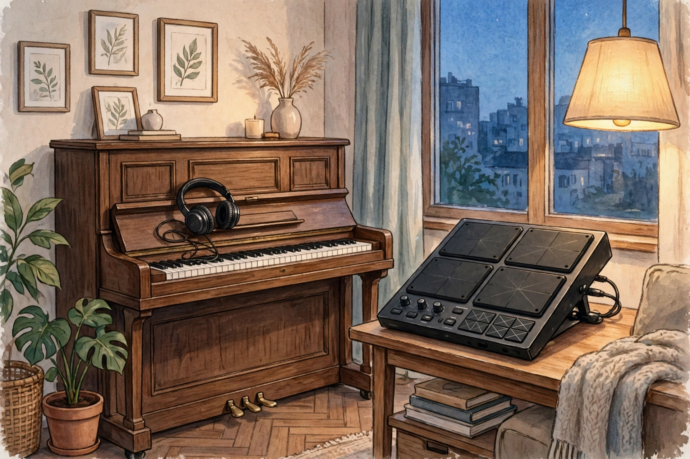

この記事の要点
- ピアノやドラム、歌の練習をしたいけれど、大きな音を出せないとき、どうすればいいのでしょうか？
- ピアノ、ドラム、歌は、音の出し方が違います。
- 電子ピアノのように、音量を調整できる楽器は、音を小さくしやすい場合があります。
💡 まず知っておきたいこと：楽器によって、音の大きさも、対策も違います
ピアノ、ドラム、歌は、音の出し方が違います。ピアノは、鍵盤を叩く音と、弦の振動が、床や壁を通って伝わる場合があります。ドラムは、叩くときの衝撃が、床に直接伝わりやすい傾向があります。歌は、声そのものが、壁や隙間を通って伝わる場合があります。まずは、どの楽器の、どの音が気になるのかを、はっきりさせることが大切です。完全に音を消すことは、どの楽器でも、現実的にはかなり難しいことです。
ピアノの場合
電子ピアノのように、音量を調整できる楽器は、音を小さくしやすい場合があります。ヘッドホンで練習できる電子ピアノは、部屋に音を出さないので、隣への漏れを減らす助けになります。アコースティックピアノの場合は、弱く弾く、消音のための道具を使う、といった方法があります。ただし、音色や、弾き心地が変わる場合があります。ピアノの下に、マットを敷くことは、床への振動を考える助けになる場合があります。
ドラムの場合
ドラムは、叩くときの衝撃が、床に伝わりやすい楽器です。電子ドラムのように、パッドを叩いて、ヘッドホンで音を聴く方法は、音を小さくしやすい考え方です。アコースティックドラムの場合は、消音パッドを使う、弱く叩く、といった方法があります。ただし、叩く感触が変わる場合があります。床に、防振マットや、厚いマットを敷くことは、振動の伝わりを考える助けになる場合があります。
🎤 歌の場合
歌は、声そのものが、壁や隙間を通って伝わる場合があります。声の大きさを控える、壁から離れて歌う、ドアや窓の隙間を意識する、といった工夫は、無理なく続けやすい方法です。マイクとヘッドホンを使って、自分の声を確認しながら練習する方法もあります。ただし、声を小さくすると、歌い方が変わる場合があります。練習の目的に合っているかどうかを、考えてみてください。
⚠️ 注意
このページの内容は、楽器の専門的なアドバイスではありません。楽器や機材の選び方は、目的や予算によって違います。目安として、無理のない範囲で考えてみてください。大きな音を出す練習が必要な場合は、練習場所や、専門の施設の利用も、ご検討ください。